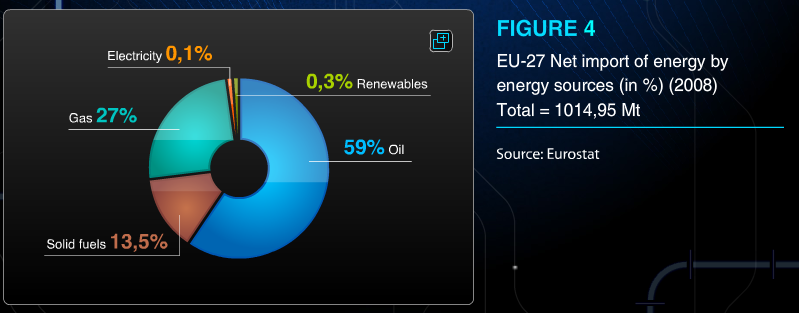
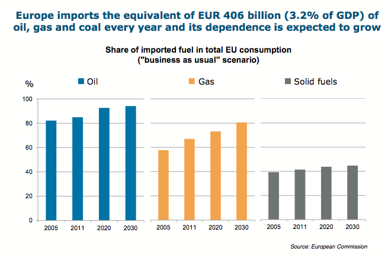

THE COMMITTEE ON INDUSTRY, RESEARCH, AND ENERGY (ITRE)
With the recent events in Ukraine highlighting the dangers of over-dependence on imported energy, what steps can the EU take to limit reliance on external energy sources and to protect consumers from price shocks?
Vice-President: Zahra Runderkamp – The Netherlands
Explanation and relevancy of the topic:
Energy is a key variable for growth and competitiveness . As of today, the EU is far from being able to produce the energy it needs to cover its own demand. Furthermore, the EU’s dependence on other countries for energy is increasing year by year. The EU is for a large part dependent on imported energy. Russia remains to be one of the biggest exporters to the EU. With that, energy has become more and more of a political tool, as most natural resources for energy production are getting scarcer every day. This also means that European economies have been exposed to energy price increases affecting consumers and industries directly. Therefore, political events have a direct influence on energy prices, leaving the consumer in a state of uncertainty. Over the past few years, we have witnessed several instances of EU’s energy safety being threatened by disruptions in Russia’s oil supply, particularly in 2006 and 2009. But there is also more historic examples: going back to 1973, the European economy suffered from an oil shock caused by the OPEC’s decision to radically increase oil prices. With its large economy and limited access to fossil fuel resources on its own territory,the EU is constantly in need of ensuring a stable and reliable supply of energy and raw materials. To achieve this goal, the EU continues to establish partnerships with producing countries, such as Russia.
In 2011, the EU imported 60% of its total gas consumption and over 80% of its oil consumption. 36% and 31% of these imports came from Russia respectively. What these imports are made up of, can be seen in this graph made by Eurostat:
And how has the importing of energy been growing? The European Commission shows it in this graph:
These graphs raise the question of what the EU could, and should, do to become more independent as far as its energy supply is concerned. With this question, the committee will also be asked to answer a more philosophical question: What do we want the future of our energy to look like on an EU level – what place do alternatives, such as nuclear or renewable, energy have?
Bearing in mind that the topic of energy security is already a priority on EU’s agenda, especially after changes made in the Lisbon Treaty, the topic of energy is an interesting one within the EU context; after all, it is a so-called shared competence: Member States have a right to frame their national energy policies, yet in responding to common concerns, such as ensuring a well-functioning internal market in energy and security of supply, along with implementing the priority European infrastructure projects, the EU needs coordinated action and interests, between Member States and the EU as a whole, overlap constantly. Furthermore, energy is at the very core of the European project : the original design of the European integration project was based on cooperation in the area of energy with the establishment of the European Coal and Steel Community and was quickly followed by the Euratom treaty.
Links:
For a first overview on energy security:
https://www.youtube.com/watch?v=RK0BkKHAZ8Y
Must-read about the history of the EU’s energy (in)dependence:
http://www.cria-online.org/11_5.html
Europe’s Energy Security: Options and Challenges to Natural Gas Supply Diversification http://www.fas.org/sgp/crs/row/R42405.pdf
European Energy Security Governance: Key Challenges in EU-Russia Energy Relations
http://unu.edu/publications/policy-briefs/european-energy-security-governance.html
Key terms:
Links:
Energy security; video, infographics and documents
http://ec.europa.eu/energy/fpis_en.htm
Do price shocks matter? A paper on price shocks
http://ideas.repec.org/p/aee/wpaper/0102.html
Key Questions:
· What role should the EU play in (binding) legislation on the EU level or should it be left largely to the discretion of national governments?
· What measures should the EU take to ensure that consumers are protected from price shocks?
· How could further competition on the energy market aid both consumers and energy security?
Key facts and figures
Links:
Read more about the key facts and figures in this communication from the Commission to the European parliament and Council of Ministers:
http://ec.europa.eu/energy/doc/20140528_energy_security_communication.pdf
Key conflicts :
As mentioned, energy security lies at the intersection of policies on energy as well as foreign affairs. The question that remains is therefore how Members States can work together effectively tackle the multiple challenges energy security poses. Moreover, we should ask ourselves to what extent the EU should legislate on energy issues - is the EU a more coherent actor in this instance as one voice than as Member States?
Another conflict is that under the shared competence, Member States work together “in the spirit of solidarity”, but the choices amongst different energy sources and general structure of energy supply are made on the EU level, choices for the conditions of exploiting their energy resources on the other hand are in the hands of Member States. All in all, we can say that the topic of energy, and especially of energy security, is fragmented.
Another key conflict lies with the side of the energy supply. Clearly, big energy firms such as Gazprom have a big role in the energy security of the EU. Though at the same time this means that the price of energy is not very competitive and big energy firms can dictate what they want. Examples have shown us that the consumer is in fact not safe from price shocks. Price shocks are less likely when the market is in fact competitive, and there are various methods of doing so,,.
Additional links:
Regulation No. 994/2010/EU on the security of gas supply:
http://eur-lex.europa.eu/LexUriServ/LexUriServ.do?uri=OJ:L:2010:295:0001:0022:EN:PDF
Gas security:
http://europa.eu/legislation_summaries/energy/external_dimension_enlargement/en0026_en.htm
Stakeholders:
Existing Measures:
An overview of legislation on the topic
http://europa.eu/legislation_summaries/energy/external_dimension_enlargement/index_en.htm and
http://www.managenergy.net/eu_legislation_policies.html